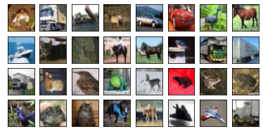
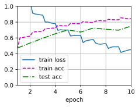
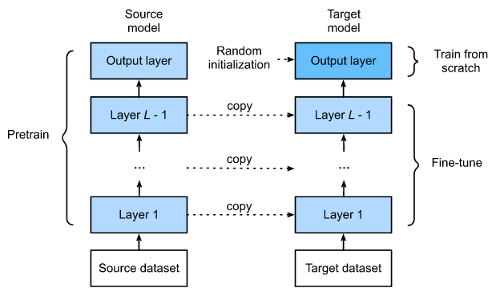
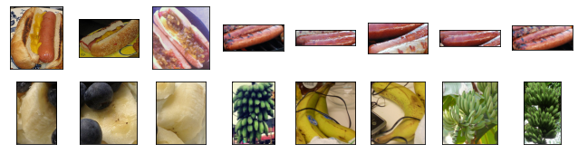
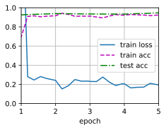
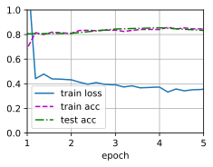
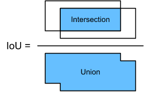
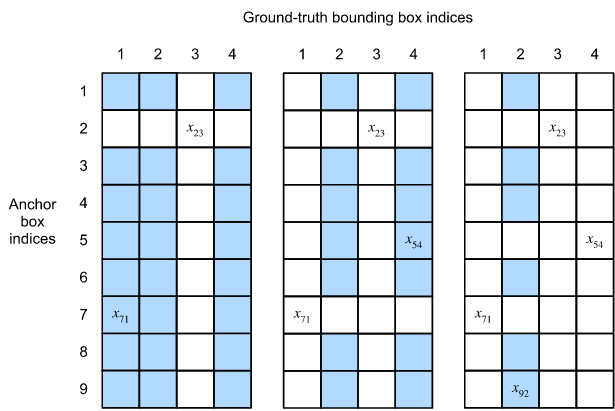

Procesamiento del Lenguaje Natural y Reconocimiento del Habla · Clase 05
3.1. Visión Por Computadora - Introducción
Contenido convertido sin ejecutar Python. Se conservan las salidas guardadas; las figuras matemáticas sustituidas y los gráficos de PE están identificados en el registro de revisión.
defuse_svg_display():"""Use the svg format to display a plot in Jupyter. Defined in :numref:`sec_calculus`"""display.set_matplotlib_formats('svg')defset_figsize(figsize=(3.5,2.5)):"""Set the figure size for matplotlib. Defined in :numref:`sec_calculus`"""use_svg_display()plt.rcParams['figure.figsize']=figsizedefset_axes(axes,xlabel,ylabel,xlim,ylim,xscale,yscale,legend):"""Set the axes for matplotlib. Defined in :numref:`sec_calculus`"""axes.set_xlabel(xlabel)axes.set_ylabel(ylabel)axes.set_xscale(xscale)axes.set_yscale(yscale)axes.set_xlim(xlim)axes.set_ylim(ylim)iflegend:axes.legend(legend)axes.grid()defplot(X,Y=None,xlabel=None,ylabel=None,legend=None,xlim=None,ylim=None,xscale='linear',yscale='linear',fmts=('-','m--','g-.','r:'),figsize=(3.5,2.5),axes=None):"""Plot data points. Defined in :numref:`sec_calculus`"""iflegendisNone:legend=[]set_figsize(figsize)axes=axesifaxeselseplt.gca()# Return True if `X` (tensor or list) has 1 axisdefhas_one_axis(X):return(hasattr(X,"ndim")andX.ndim==1orisinstance(X,list)andnothasattr(X[0],"__len__"))ifhas_one_axis(X):X=[X]ifYisNone:X,Y=[[]]*len(X),Xelifhas_one_axis(Y):Y=[Y]iflen(X)!=len(Y):X=X*len(Y)axes.cla()forx,y,fmtinzip(X,Y,fmts):iflen(x):axes.plot(x,y,fmt)else:axes.plot(y,fmt)set_axes(axes,xlabel,ylabel,xlim,ylim,xscale,yscale,legend)defshow_images(imgs,num_rows,num_cols,titles=None,scale=1.5):"""Plot a list of images. Defined in :numref:`sec_fashion_mnist`"""figsize=(num_cols*scale,num_rows*scale)_,axes=plt.subplots(num_rows,num_cols,figsize=figsize)axes=axes.flatten()fori,(ax,img)inenumerate(zip(axes,imgs)):iftorch.is_tensor(img):# Tensor Imageax.imshow(img.numpy())else:# PIL Imageax.imshow(img)ax.axes.get_xaxis().set_visible(False)ax.axes.get_yaxis().set_visible(False)iftitles:ax.set_title(titles[i])returnaxes
A.2 Funciones para Deep Learning
Código Python · celda 7
classAccumulator:"""For accumulating sums over `n` variables."""def__init__(self,n):"""Defined in :numref:`sec_softmax_scratch`"""self.data=[0.0]*ndefadd(self,*args):self.data=[a+float(b)fora,binzip(self.data,args)]defreset(self):self.data=[0.0]*len(self.data)def__getitem__(self,idx):returnself.data[idx]defget_dataloader_workers():"""Use 4 processes to read the data. Defined in :numref:`sec_fashion_mnist`"""return4defaccuracy(y_hat,y):"""Compute the number of correct predictions. Defined in :numref:`sec_softmax_scratch`"""iflen(y_hat.shape)>1andy_hat.shape[1]>1:y_hat=argmax(y_hat,axis=1)cmp=astype(y_hat,y.dtype)==yreturnfloat(reduce_sum(astype(cmp,y.dtype)))defevaluate_accuracy(net,data_iter):"""Compute the accuracy for a model on a dataset. Defined in :numref:`sec_softmax_scratch`"""ifisinstance(net,torch.nn.Module):net.eval()# Set the model to evaluation modemetric=Accumulator(2)# No. of correct predictions, no. of predictionswithtorch.no_grad():forX,yindata_iter:metric.add(accuracy(net(X),y),size(y))returnmetric[0]/metric[1]defevaluate_loss(net,data_iter,loss):"""Evaluate the loss of a model on the given dataset. Defined in :numref:`sec_model_selection`"""metric=Accumulator(2)# Sum of losses, no. of examplesforX,yindata_iter:out=net(X)y=reshape(y,out.shape)l=loss(out,y)metric.add(reduce_sum(l),size(l))returnmetric[0]/metric[1]deftry_gpu(i=0):"""Return gpu(i) if exists, otherwise return cpu(). Defined in :numref:`sec_use_gpu`"""iftorch.cuda.device_count()>=i+1:returntorch.device(f'cuda:{i}')returntorch.device('cpu')deftry_all_gpus():"""Return all available GPUs, or [cpu(),] if no GPU exists. Defined in :numref:`sec_use_gpu`"""devices=[torch.device(f'cuda:{i}')foriinrange(torch.cuda.device_count())]returndevicesifdeviceselse[torch.device('cpu')]defevaluate_accuracy_gpu(net,data_iter,device=None):"""Compute the accuracy for a model on a dataset using a GPU. Defined in :numref:`sec_lenet`"""ifisinstance(net,nn.Module):net.eval()# Set the model to evaluation modeifnotdevice:device=next(iter(net.parameters())).device# No. of correct predictions, no. of predictionsmetric=Accumulator(2)withtorch.no_grad():forX,yindata_iter:ifisinstance(X,list):# Required for BERT Fine-tuning (to be covered later)X=[x.to(device)forxinX]else:X=X.to(device)y=y.to(device)metric.add(accuracy(net(X),y),size(y))returnmetric[0]/metric[1]deftrain_ch6(net,train_iter,test_iter,num_epochs,lr,device):"""Train a model with a GPU (defined in Chapter 6). Defined in :numref:`sec_lenet`"""definit_weights(m):iftype(m)==nn.Linearortype(m)==nn.Conv2d:nn.init.xavier_uniform_(m.weight)net.apply(init_weights)print('training on',device)net.to(device)optimizer=torch.optim.SGD(net.parameters(),lr=lr)loss=nn.CrossEntropyLoss()animator=Animator(xlabel='epoch',xlim=[1,num_epochs],legend=['train loss','train acc','test acc'])timer,num_batches=Timer(),len(train_iter)forepochinrange(num_epochs):# Sum of training loss, sum of training accuracy, no. of examplesmetric=Accumulator(3)net.train()fori,(X,y)inenumerate(train_iter):timer.start()optimizer.zero_grad()X,y=X.to(device),y.to(device)y_hat=net(X)l=loss(y_hat,y)l.backward()optimizer.step()withtorch.no_grad():metric.add(l*X.shape[0],accuracy(y_hat,y),X.shape[0])timer.stop()train_l=metric[0]/metric[2]train_acc=metric[1]/metric[2]if(i+1)%(num_batches//5)==0ori==num_batches-1:animator.add(epoch+(i+1)/num_batches,(train_l,train_acc,None))test_acc=evaluate_accuracy_gpu(net,test_iter)animator.add(epoch+1,(None,None,test_acc))print(f'loss {train_l:.3f}, train acc {train_acc:.3f}, 'f'test acc {test_acc:.3f}')print(f'{metric[2]*num_epochs/timer.sum():.1f} examples/sec 'f'on {str(device)}')
Código Python · celda 8
classAnimator:"""For plotting data in animation."""def__init__(self,xlabel=None,ylabel=None,legend=None,xlim=None,ylim=None,xscale='linear',yscale='linear',fmts=('-','m--','g-.','r:'),nrows=1,ncols=1,figsize=(3.5,2.5)):"""Defined in :numref:`sec_softmax_scratch`"""# Incrementally plot multiple linesiflegendisNone:legend=[]use_svg_display()self.fig,self.axes=plt.subplots(nrows,ncols,figsize=figsize)ifnrows*ncols==1:self.axes=[self.axes,]# Use a lambda function to capture argumentsself.config_axes=lambda:set_axes(self.axes[0],xlabel,ylabel,xlim,ylim,xscale,yscale,legend)self.X,self.Y,self.fmts=None,None,fmtsdefadd(self,x,y):# Add multiple data points into the figureifnothasattr(y,"__len__"):y=[y]n=len(y)ifnothasattr(x,"__len__"):x=[x]*nifnotself.X:self.X=[[]for_inrange(n)]ifnotself.Y:self.Y=[[]for_inrange(n)]fori,(a,b)inenumerate(zip(x,y)):ifaisnotNoneandbisnotNone:self.X[i].append(a)self.Y[i].append(b)self.axes[0].cla()forx,y,fmtinzip(self.X,self.Y,self.fmts):self.axes[0].plot(x,y,fmt)self.config_axes()display.display(self.fig)display.clear_output(wait=True)
Código Python · celda 9
classTimer:"""Record multiple running times."""def__init__(self):"""Defined in :numref:`subsec_linear_model`"""self.times=[]self.start()defstart(self):"""Start the timer."""self.tik=time.time()defstop(self):"""Stop the timer and record the time in a list."""self.times.append(time.time()-self.tik)returnself.times[-1]defavg(self):"""Return the average time."""returnsum(self.times)/len(self.times)defsum(self):"""Return the sum of time."""returnsum(self.times)defcumsum(self):"""Return the accumulated time."""returnnp.array(self.times).cumsum().tolist()
Bibliografía
@article{weng2017detection1,
title = "Object Detection for Dummies Part 1: Gradient Vector, HOG, and SS",
author = "Weng, Lilian",
journal = "lilianweng.github.io/lil-log",
year = "2017",
url = "http://lilianweng.github.io/lil-log/2017/10/29/object-recognition-for-dummies-part-1.html"
}
@inproceedings{chaple2015comparisions,
title={Comparisions of Robert, Prewitt, Sobel operator based edge detection methods for real time uses on FPGA},
author={Chaple, Girish N and Daruwala, RD and Gofane, Manoj S},
booktitle={2015 International Conference on Technologies for Sustainable Development (ICTSD)},
pages={1--4},
year={2015},
organization={IEEE}
}
@article{felzenszwalb2004efficient,
title={Efficient graph-based image segmentation},
author={Felzenszwalb, Pedro F and Huttenlocher, Daniel P},
journal={International journal of computer vision},
volume={59},
number={2},
pages={167--181},
year={2004},
publisher={Springer}
}
1 Visión por Computadora
En los último años, el deep learning ha sido el poder transformador para mejorar el rendimiento de los sistemas de visión por computadora. Se puede decir que las aplicación de visión artificial más avanzandas son casi inseparables del deep learning. Por ende, en las siguientes secciones veremos métodos y aplicaciones que han sido influyentes recientemente en la academia y en la industria.
1.1 Aumento de Imagen (Image Augmentation)
La Aumento de imagen (image augmentation) genera ejemplos de entrenamiento similares pero distintos después de una serie de cambios aleatorios en las imágenes de entrenamiento, expandiendo así el tamaño del conjunto de entrenamiento. Alternativamente, el aumento de imágenes puede estar motivado por el hecho de que los ajustes aleatorios de los ejemplos de etrenamiento permiten que los modelos dependan menos de ciertos atributos, mejorando así su capacidad de generalización. Por ej., podemos recortar una imagen de diferentes formas para que el objeto de interés aparezca en diferentes posiciones, reduciendo la dependencia de un model sobre la posición del objeto. Podemos también ajustar factores como el brillo y el color para reducir la sensibilidad del modelo hacia los colores.*
1.1.1 Métodos de Aumento de Imagen Comúnes
A continuación, usamos la siguiente imagen para describir los métodos de aumento de imagen.
Código Python · celda 14
path="./datos"img=Image.open(path)plt.imshow(img)
La mayoría de los métodos de aumento de imágenes tiene un cierto grado de aleatoriedad. Para una mejor observación, creamos una función apply que ejecutará múltiples veces el aumento de la imagen sobre la imagen de entrada.
1.1.1.1 Volteado y Recortado (Flipping and Cropping)
Voltear la imagen a la derecha o izquierda por lo general no cambia la categoría del objeto. Este es uno de los primeros y más utilizados métodos de aumento de imágenes. A continuación, usamos el módulo de transformaciones de pytorch para crear una instancia de RandomFlipLeftRight, que voltea una imagen de izquierda a derecha con un 50 de probabilidad.
El volteado hacia arriba o hacia abajo no es tan común como el volteado hacia la izquierda y derecha.
En el ejemplo, la imagen del gato está en el medio de la imagen, pero este puede no ser el caso general. Anteriormente, explicamos que la capa de max-pool puede reducir la sensibilidad de una capa de convolución sobre una posición objetivo. Además, podemos recortar aleatoriamente la imagen para hacer que los objetos aparezcan en diferentes posiciones en la imagen a diferentes escalas, lo que también puede reducir la sensibilidad de un modelo a la posición de destino.
En el siguiente código, recortamos aleatoriamente un área de del área original cada vez, y la relación entre el ancho y el alto de esta area es seleccionada aleatoriamente de . Luego, el ancho y el alto de la región se escalan a píxeles. A menos que se especifique lo contrario, el número aleatorio entre y se refiere al valor continuo obtenido por una distribución aleatorio uniforme del intervalo .
También podemos crear una instancia de RandomColorJitter y establecer como cambiar aleatoriamente el brillo, contraste, saturación y matiz de la imagen al mismo tiempo.
Usamos el datset Cifar-10, ya que el color y el tamaño de los objetos tiene diferencias más significativas en comparación con el dataset Fashion-MNIST. Para ello, mostramos las primeras imágenes del dataset a modo de ejemplo.
Downloading https://www.cs.toronto.edu/~kriz/cifar-10-python.tar.gz to ../data/cifar-10-python.tar.gz
0%| | 0/170498071 [00:00<?, ?it/s]
Extracting ../data/cifar-10-python.tar.gz to ../data
array([<matplotlib.axes._subplots.AxesSubplot object at 0x7f24736a98d0>,
<matplotlib.axes._subplots.AxesSubplot object at 0x7f24733acdd0>,
<matplotlib.axes._subplots.AxesSubplot object at 0x7f24733523d0>,
<matplotlib.axes._subplots.AxesSubplot object at 0x7f247365e990>,
<matplotlib.axes._subplots.AxesSubplot object at 0x7f2473441f50>,
<matplotlib.axes._subplots.AxesSubplot object at 0x7f2473620310>,
<matplotlib.axes._subplots.AxesSubplot object at 0x7f24734328d0>,
<matplotlib.axes._subplots.AxesSubplot object at 0x7f24735c1f50>,
<matplotlib.axes._subplots.AxesSubplot object at 0x7f24735454d0>,
<matplotlib.axes._subplots.AxesSubplot object at 0x7f24733bcad0>,
<matplotlib.axes._subplots.AxesSubplot object at 0x7f2471f6c150>,
<matplotlib.axes._subplots.AxesSubplot object at 0x7f2471fa2710>,
<matplotlib.axes._subplots.AxesSubplot object at 0x7f2471f5acd0>,
<matplotlib.axes._subplots.AxesSubplot object at 0x7f2471f1b2d0>,
<matplotlib.axes._subplots.AxesSubplot object at 0x7f2471ed2890>,
<matplotlib.axes._subplots.AxesSubplot object at 0x7f2471e88e50>,
<matplotlib.axes._subplots.AxesSubplot object at 0x7f2471e4b4d0>,
<matplotlib.axes._subplots.AxesSubplot object at 0x7f2471e00a90>,
<matplotlib.axes._subplots.AxesSubplot object at 0x7f2471db8f50>,
<matplotlib.axes._subplots.AxesSubplot object at 0x7f2471d7a650>,
<matplotlib.axes._subplots.AxesSubplot object at 0x7f2471d2fc10>,
<matplotlib.axes._subplots.AxesSubplot object at 0x7f2471cf3210>,
<matplotlib.axes._subplots.AxesSubplot object at 0x7f2471caa7d0>,
<matplotlib.axes._subplots.AxesSubplot object at 0x7f2471c64710>,
<matplotlib.axes._subplots.AxesSubplot object at 0x7f2471c9bc10>,
<matplotlib.axes._subplots.AxesSubplot object at 0x7f2471c5f150>,
<matplotlib.axes._subplots.AxesSubplot object at 0x7f2471c14650>,
<matplotlib.axes._subplots.AxesSubplot object at 0x7f2471bc9b50>,
<matplotlib.axes._subplots.AxesSubplot object at 0x7f2471b80f50>,
<matplotlib.axes._subplots.AxesSubplot object at 0x7f2471b44590>,
<matplotlib.axes._subplots.AxesSubplot object at 0x7f2471af8a90>,
<matplotlib.axes._subplots.AxesSubplot object at 0x7f2471aaef90>],
dtype=object)

Para obtener resultados definitivos durante la predicción, generalmente se aplica el aumento de imagen a los ejemplos de entrenamiento y no se utiliza el aumento de imagen con operaciones aleatorias durante la predicción.
Para el ejemplo, usamos solo el método de volteado izquierda-derecha más simple. Además, se utiliza una instancia de ToTensorpara convertir un minibatch de imágenes al formato requerido para el framework de deep learning, es decir, número de punto flotante de bits entre y con la siguiente dimensión: , siendo el tamaño de lote, número de canales, alto y ancho de las imágenes respectivamente.
A continuación, definimos una función auxiliar para facilitar la lectura de la imagen y aplicar el aumento de las mismas.
Cuando leemos los conjuntos de entrenamiento y de prueba, usamos el iterador de datos incorporado. En cada iteración, un iterador de datos lee un minibatch de datos con tamaño batch_size cada vez. También, se mezclan aleatoriamente los ejemplos para el iterador de datos de entrenamiento.
Además, la función devuelve los iteradores de datos tanto para el conjunto de entrenamiento como para el conjunto de validación. Y también, acepta un un argumento opcional que es el aumento de las imágenes.
A continuación, se implemente el modelo ResNet-18 sobre el dataset CIFAR-10.
Código Python · celda 35
classResidual(nn.Module):"""The Residual block of ResNet."""def__init__(self,input_channels,num_channels,use_1x1conv=False,strides=1):super().__init__()# Capa convolucional 1 de 3 x 3, padding 1, stride = strides = 1 (por defecto)self.conv1=nn.Conv2d(in_channels=input_channels,out_channels=num_channels,kernel_size=3,padding=1,stride=strides)# Capa convolucional 2 de 3 x 3, padding 1, stride = strides = 1 (por defecto)# input_channels = output_channels = num_channelsself.conv2=nn.Conv2d(in_channels=num_channels,out_channels=num_channels,kernel_size=3,padding=1)# Se utiliza en caso de que el número de canales sea diferente, por eso se añade una capa convolucional# extra de 1 x 1ifuse_1x1conv:self.conv3=nn.Conv2d(in_channels=input_channels,out_channels=num_channels,kernel_size=1,stride=strides)else:self.conv3=None# Capas de batch normalizationself.bn1=nn.BatchNorm2d(num_channels)self.bn2=nn.BatchNorm2d(num_channels)defforward(self,X):# Después de aplicar BN a la capa convolucional1, se aplica la función de activación ReLuY=F.relu(self.bn1(self.conv1(X)))# Luego, se aplica BN a la capa convolucional 2 (que recibe como entrada la salida de la capa convolucional 1# luego de aplicar bn1 y Relu)Y=self.bn2(self.conv2(Y))# se realiza la convolución 3 si es que se definió.ifself.conv3:X=self.conv3(X)Y+=XreturnF.relu(Y)
defresnet_block(input_channels,num_channels,num_residuals,first_block=False):blk=[]foriinrange(num_residuals):# Procesamiento especial para el primer bloqueifi==0andnotfirst_block:blk.append(Residual(input_channels=input_channels,num_channels=num_channels,use_1x1conv=True,strides=2))else:blk.append(Residual(input_channels=num_channels,num_channels=num_channels))returnblk
deftrain_batch_ch13(net,X,y,loss,trainer,devices):"""Train for a minibatch with mutiple GPUs (defined in Chapter 13)."""ifisinstance(X,list):# Required for BERT fine-tuning (to be covered later)X=[x.to(devices[0])forxinX]else:X=X.to(devices[0])y=y.to(devices[0])net.train()trainer.zero_grad()pred=net(X)l=loss(pred,y)l.sum().backward()trainer.step()train_loss_sum=l.sum()train_acc_sum=accuracy(pred,y)returntrain_loss_sum,train_acc_sumdeftrain_ch13(net,train_iter,test_iter,loss,trainer,num_epochs,devices=try_all_gpus()):"""Train a model with mutiple GPUs (defined in Chapter 13)."""timer,num_batches=Timer(),len(train_iter)animator=Animator(xlabel='epoch',xlim=[1,num_epochs],ylim=[0,1],legend=['train loss','train acc','test acc'])net=nn.DataParallel(net,device_ids=devices).to(devices[0])forepochinrange(num_epochs):# Sum of training loss, sum of training accuracy, no. of examples,# no. of predictionsmetric=Accumulator(4)fori,(features,labels)inenumerate(train_iter):timer.start()l,acc=train_batch_ch13(net,features,labels,loss,trainer,devices)metric.add(l,acc,labels.shape[0],labels.numel())timer.stop()if(i+1)%(num_batches//5)==0ori==num_batches-1:animator.add(epoch+(i+1)/num_batches,(metric[0]/metric[2],metric[1]/metric[3],None))test_acc=evaluate_accuracy_gpu(net,test_iter)animator.add(epoch+1,(None,None,test_acc))print(f'loss {metric[0]/metric[2]:.3f}, train acc 'f'{metric[1]/metric[3]:.3f}, test acc {test_acc:.3f}')print(f'{metric[2]*num_epochs/timer.sum():.1f} examples/sec on 'f'{str(devices)}')
Luego, definimos la función train_with_data_aug para entrenar el modelo con el aumento de imágenes. Esta función obtiene todas las GPU disponibles, y utiliza el optimizador de Adam, y aplica el aumento de imágenes sobre el dataset de entrenamiento y finalmente, llama a la función train_ch13 para el entrenamiento y la evaluación del modelo.
Código Python · celda 42
defresnet18(num_classes):"""A slightly modified ResNet-18 model. Defined in :numref:`sec_multi_gpu_concise`"""defresnet_block(num_channels,num_residuals,first_block=False):blk=nn.Sequential()foriinrange(num_residuals):ifi==0andnotfirst_block:blk.add(Residual(num_channels,use_1x1conv=True,strides=2))else:blk.add(Residual(num_channels))returnblknet=nn.Sequential()# This model uses a smaller convolution kernel, stride, and padding and# removes the maximum pooling layernet.add(nn.Conv2D(64,kernel_size=3,strides=1,padding=1),nn.BatchNorm(),nn.Activation('relu'))net.add(resnet_block(64,2,first_block=True),resnet_block(128,2),resnet_block(256,2),resnet_block(512,2))net.add(nn.GlobalAvgPool2D(),nn.Dense(num_classes))returnnet
loss 0.452, train acc 0.842, test acc 0.750
2181.8 examples/sec on [device(type='cuda', index=0)]

1.2 Fine-Tuning
Supongamos que queremos reconocer diferentes tipos de sillas a partir de imágenes y luego hacer una recomendación de enlaces de compra a los usuarios. Un método posible es identificar primero sillas comunes, tomar imágenes de diferentes ángulas para cada silla y luego entrenar un modelo de clasificación en el dataset de imágenes recopilado.
Sin embargo, en comparación con el número de imágenes del dataset ImageNet, sigue siendo muy pequeño. Esto puede llevar a un sobreajust de modelos complicados que son adecuados para ImageNet en este datset de sillas. Además, debido a la cantidad limitad de ejemplos de entrenamiento, es posible que la presición del model no cumpla con los requisitos prácticos.
Para resolver los problemas mencionados, una solución obvia es recolectar más datos. Sin embargo, conseguir y etiquetar los datos puede tomar mucho tiempo y dinero. Por ej., para ImageNet, los investigadores gastaron millones de dólares en fondos de investigación. Aunque el costo actual de recopilación de datos se ha reducido significativamente, este costo aún no se puede ignorar.
Otra solución es aplicar transferencia de conocimiento (trasnfer learning) para transferir el conocimiento aprendido desde el dataset fuente hacia el dataset objetivo. Por ej., aunque la mayoría de las imágenes en el dataset ImageNet no tienen nada que ver con las sillas, el modelo entrenado en este dataset puede extraer características de imágenes más generales, que pueden ayudar a identificar bordes, texturas, formas y composición de objetos. Estas características similares también pueden ser efectivas para reconocer sillas.
Dentro del transfer learning, la técnica de fine-tunning consiste en realizar pequeños ajustes para obtener un comportamiento notablemente mejor.
1.2.1 Pasos
En la siguiente sección, introducimos una de las técnicas más comunes en la transferencia de conocimiento (transfer learning): fine-tunning, que consiste en pasos:
Pre-entrenar un modelo de red neuronal, es decir, entrenar el modelo origen, en un dataset de origen (por ej., el dataset ImageNet).
Crear un nuevo modelo de red neuronal, es decir, el modelo objetivo. Esto copia todo los diseños del modelo y sus parámetros en el modelo origen, excepto la capa de salida. Suponemos que estos parámetros contienen el conocimiento aprendido del dataset de origen y este conocimiento también será aplicado al dataset objetivo. También, se asume que la capa de salida del modelo de origen está estrechamente relacionada con las etiquetas del dataset de origen; por tanto, no se utiliza en el modelo de destino.
Añadir una capa de salida al modelo objetivo, cuyo número de salidas es el número de las categorías del dataset objetivo. Luego, se inicializa aleatoriamente los parámetros del modelo para esta capa.
Entrenar el modelo objetivo sobre el dataset objetivo, es decir, sobre el dataset de sillas. La capa de salida será entrenada desde cero, mientras que los parámetros de todas las otras capas se ajustarán (fine-tuned) en función de los parámetros del modelo de origen.

Cuando los datasets destino son mucho más pequeños que los datasets de origen, fine-tunning ayuda a mejorar la capacidad de generalización de los modelos.
1.2.2 Ejemplo de Reconocimiento usando Transfer Learning*
Para el siguiente ejemplo, se utilizará el dataset de hot-dog. Este dataset consiste en clases positivas de imágenes que contienen hot dogs, y muchas otras clasas negativas que contienen otro tipo de comidas. en este caso, imágenes de ambas calses son utilizadas para el entrenamiento y el resto para la evaluación.
Después de extraer el dataset, obtenemos dos carpetas hotdog/train y hotdog/test. Ambas carpetas tienen las subcarpetas hotdog y not-hotdog, ambas contienen imágenes de la clase correspondiente.
defdownload(name,cache_dir=os.path.join('..','data')):"""Download a file inserted into DATA_HUB, return the local filename. Defined in :numref:`sec_kaggle_house`"""assertnameinDATA_HUB,f"{name} does not exist in {DATA_HUB}."url,sha1_hash=DATA_HUB[name]os.makedirs(cache_dir,exist_ok=True)fname=os.path.join(cache_dir,url.split('/')[-1])ifos.path.exists(fname):sha1=hashlib.sha1()withopen(fname,'rb')asf:whileTrue:data=f.read(1048576)ifnotdata:breaksha1.update(data)ifsha1.hexdigest()==sha1_hash:returnfname# Hit cacheprint(f'Downloading {fname} from {url}...')r=requests.get(url,stream=True,verify=True)withopen(fname,'wb')asf:f.write(r.content)returnfnamedefdownload_extract(name,folder=None):"""Download and extract a zip/tar file. Defined in :numref:`sec_kaggle_house`"""fname=download(name)base_dir=os.path.dirname(fname)data_dir,ext=os.path.splitext(fname)ifext=='.zip':fp=zipfile.ZipFile(fname,'r')elifextin('.tar','.gz'):fp=tarfile.open(fname,'r')else:assertFalse,'Only zip/tar files can be extracted.'fp.extractall(base_dir)returnos.path.join(base_dir,folder)iffolderelsedata_dirdefdownload_all():"""Download all files in the DATA_HUB. Defined in :numref:`sec_kaggle_house`"""fornameinDATA_HUB:download(name)
array([<matplotlib.axes._subplots.AxesSubplot object at 0x7f236eb06910>,
<matplotlib.axes._subplots.AxesSubplot object at 0x7f236daa16d0>,
<matplotlib.axes._subplots.AxesSubplot object at 0x7f236da56c10>,
<matplotlib.axes._subplots.AxesSubplot object at 0x7f236da1a210>,
<matplotlib.axes._subplots.AxesSubplot object at 0x7f236d9d07d0>,
<matplotlib.axes._subplots.AxesSubplot object at 0x7f236d985d90>,
<matplotlib.axes._subplots.AxesSubplot object at 0x7f236d94b4d0>,
<matplotlib.axes._subplots.AxesSubplot object at 0x7f236d902c50>,
<matplotlib.axes._subplots.AxesSubplot object at 0x7f236d8c7310>,
<matplotlib.axes._subplots.AxesSubplot object at 0x7f236d87a950>,
<matplotlib.axes._subplots.AxesSubplot object at 0x7f236d839f90>,
<matplotlib.axes._subplots.AxesSubplot object at 0x7f236d7fb410>,
<matplotlib.axes._subplots.AxesSubplot object at 0x7f236d831950>,
<matplotlib.axes._subplots.AxesSubplot object at 0x7f236d7e6f10>,
<matplotlib.axes._subplots.AxesSubplot object at 0x7f236d7a8510>,
<matplotlib.axes._subplots.AxesSubplot object at 0x7f236d75dad0>],
dtype=object)

Durante el entrenamiento, primero se recorta un área aleatoria de tamaño aleatorio y una relación de aspecto (ratio) aleatoria de la imagen, y luego escalamos dicha área a una imagen de entrada de . Durante la prueba, escalamos tanto el alto como el ancho de una imagen a píxeles, para luego realizar un recorte del área central de dada como entrada. Además, para los tres canales de color (rojo, verde y azul) RGB, estandarizamos sus valores canal por canal. Concretamente, el valor medio de un canal es restado de cada valor de ese canal y luego el resultado se divide por la desviación estándar de ese canal.
Código Python · celda 59
# Specify the means and standard deviations of the three RGB channels to# standardize each channelnormalize=torchvision.transforms.Normalize([0.485,0.456,0.406],[0.229,0.224,0.225])train_augs=torchvision.transforms.Compose([torchvision.transforms.RandomResizedCrop(224),torchvision.transforms.RandomHorizontalFlip(),torchvision.transforms.ToTensor(),normalize])test_augs=torchvision.transforms.Compose([torchvision.transforms.Resize(256),torchvision.transforms.CenterCrop(224),torchvision.transforms.ToTensor(),normalize])
1.2.2.1 Definición e Inicialización del Modelo
En este caso, utilizamos ResNet-18, la cual fue pre-entrenada sobre el dataset ImageNet, como el modelo fuente. Aquí, especificamos el parámetro pretrained=True para que automáticamente se descargue los parámetros del modelo pre-entrenado.
Downloading: "https://download.pytorch.org/models/resnet18-f37072fd.pth" to /root/.cache/torch/hub/checkpoints/resnet18-f37072fd.pth
0%| | 0.00/44.7M [00:00<?, ?B/s]
La instancia del modelo fuente pre-entrenado contiene un número de capas de características y una capa de salida fc. El propósito general de esta división es facilitar la técnica de fine-tuning de los parámetros del modelo de todas las capas excepto la capa de salida.
Como en una capa completamente conectada, transforma las salidas mediante global-avg-pool de ResNet en salidas de clase del dataset ImageNet. Luego, construimos una nueva red neuronal como modelo objetivo. Se define de la misma manera que el modelo pre-entrenado excepto por el número de salidas, que en la capa final se establece para el número de clases en el dataset objetivo.
En el siguientet código, el modelo de parámetro en las características de la variable miembro de la instancia del model objetivo finetune_net son inicializadas para el modelo de parámetros de la capa correspondiente del modelo fuente. Dado que los parámetros del modelo en las características están entrenados previamente sobre el dataset ImageNet y son lo suficientemente buenos, generalmente solo se necesita una pequeña tasa de aprendizaje (learning_rate) para ajustar estos parámetros.
Los parámetros del modelo en la salida de la variable miembro se inicializan aleatoriamente y, por lo general, requieren una mayor tasa de aprendizaje (learning_rate) para realizar el entrenamiento desde cero. Suponiendo que la tasa de aprendizaje es la instancia de Trainer es , se establece la tasa de aprendizaje de los parámetros del modelo en la salida de la variable miembro en en la iteración.
En el siguiente código, los parámetros del modelo antes de la capa de salida de la instancia del modelo objetivo finetune_netson inicializados con los parámetros del modelo de las capas correspondientes del modelo fuente. Además, estos parámetros del modelo fueron obtenidos mediante el pre-entrenamiento sobre el dataset ImageNet. Por lo tanto, tenemos que usar un pequeño learning_rate para el fine-tune así como para los parámetros pre-entrenados. Por otra parte, los parámetros del modelo en la capa de salida son inicializados aleatoriamente y, por lo general, requieren un learning_rate más grande para realizar el aprendizaje desde cero.
# If `param_group=True`, the model parameters in the output layer will be# updated using a learning rate ten times greaterdeftrain_fine_tuning(net,learning_rate,batch_size=128,num_epochs=5,param_group=True):train_iter=torch.utils.data.DataLoader(torchvision.datasets.ImageFolder(os.path.join(data_dir,'train'),transform=train_augs),batch_size=batch_size,shuffle=True)test_iter=torch.utils.data.DataLoader(torchvision.datasets.ImageFolder(os.path.join(data_dir,'test'),transform=test_augs),batch_size=batch_size)devices=try_all_gpus()loss=nn.CrossEntropyLoss(reduction="none")ifparam_group:params_1x=[paramforname,paraminnet.named_parameters()ifnamenotin["fc.weight","fc.bias"]]trainer=torch.optim.SGD([{'params':params_1x},{'params':net.fc.parameters(),'lr':learning_rate*10}],lr=learning_rate,weight_decay=0.001)else:trainer=torch.optim.SGD(net.parameters(),lr=learning_rate,weight_decay=0.001)train_ch13(net,train_iter,test_iter,loss,trainer,num_epochs,devices)
Se estableció el learning_rate base en un valor pequeño para ajustar los parámetros del modelo obtenidos a través del preentrenamiento. Basándose en la configuración anterior, se entrenará los parámetros de la capa de salida del modelo de destino desde cero utilizando un learning rate diez veces mayor.
Código Python · celda 70
train_fine_tuning(finetune_net,5e-5)
loss 0.195, train acc 0.924, test acc 0.946
165.1 examples/sec on [device(type='cuda', index=0)]

1.2.2.3 Comparación con un Modelo Pre-Entrenado sin Fine-Tuning
Para comparar, definimos un modelo idéntico, pero inicializamos todos sus parámetros del modelo en valores aleatorios. Además, el modelo de entrada necesita ser entrenado desde cero, por lo cual, podemos usar un learning rate más grande.
loss 0.357, train acc 0.845, test acc 0.834
164.4 examples/sec on [device(type='cuda', index=0)]

Como podemos ver, el modelo fine-tuning tiene una tendencia de un mejor rendimiento para la misma cantidad de épocas por sus pvalores de parámetros iniciales son más efectivos.
1.3 Detección de Objetos y Cuadros Delimitadores (Bounding Boxes)
En la tarea de clasificación de imágenes, se asume que solo hay un objeto principal y solo nos enfocamos en cómo reconocer su categoría. Sin embargo, a menudo hay varios objetos de interés en la imagen. No solo queremos saber sus categorías, sino también sus posiciones específicas en la imagen. En visión por computadora, nos referimos a tareas como detección de objetos (o reconocimiento de objetos).
El reconocimiento de objetos ha sido aplicado en muchos campos de estudio. Por ej., en la conducción autónoma en la cual se necesita trazar una ruta de viaje detectando en tiempo real la posición de los vehículos en su entorno, peatones, rutas y obstáculos en las imagenes de video capturadas.
En las siguientes secciones, introdicimos algunos métodos de deep learning para detección de objetcos. Primero empezaremos con una introducción a las posiciones (o ubicaciones) de los objetos.
En la detección de objetos, por lo general se utilizan cuadtros delimitadores (bounding boxes) para describir la ubicación espacial de un objeto. El cuadro delimitador es rectangular, que está determinado por las coordenadas e de la esquina superior izquierda del rectángulo y las coordenadas de la esquina inferior derecha. Otra representación del cuadro delimitador de uso común son las coordenadas del eje del centro del cuadro delimitador y el ancho y alto del cuadro.
Aquí, definimos funciones para convertir estas dos representaciones: box_corner_to_center convierte de la representación de dos esquinas a la representación de centro-ancho-alto, y box_center_to_corner viceversa. Los cuadros de arumentos de entrada deben ser un tensor de forma bidimensional , donde es el número de cuadros delimitadores.
Código Python · celda 77
defbox_corner_to_center(boxes):"""Convert from (upper-left, lower-right) to (center, width, height)."""x1,y1,x2,y2=boxes[:,0],boxes[:,1],boxes[:,2],boxes[:,3]cx=(x1+x2)/2cy=(y1+y2)/2w=x2-x1h=y2-y1boxes=torch.stack((cx,cy,w,h),axis=-1)returnboxesdefbox_center_to_corner(boxes):"""Convert from (center, width, height) to (upper-left, lower-right)."""cx,cy,w,h=boxes[:,0],boxes[:,1],boxes[:,2],boxes[:,3]x1=cx-0.5*wy1=cy-0.5*hx2=cx+0.5*wy2=cy+0.5*hboxes=torch.stack((x1,y1,x2,y2),axis=-1)returnboxes
A continuación, definimos los cuadros delimitadores del perro y el gato de la imagen en la imagen basados en la información de las coordenadas. El origen de las coordenadas en la imagen es la esquina superior izquierda, y hacia la derecha y abajo son las direcciones positivas de los ejes e respectivamente.
Código Python · celda 79
# Here `bbox` is the abbreviation for bounding boxdog_bbox,cat_bbox=[60.0,45.0,378.0,516.0],[400.0,112.0,655.0,493.0]
Podemos verificar la exactitud de las dos funciones de conversión del cuadro delimitador convirtiendo dos veces.
Luego, dibujamos los cuadros delimitadores en la imagen para comprobar si son precisos. Antes de dibujar, definimos una función auxiliar bbox_to_rect la cual representa el cuadro delimitador en el forma de cuadro delimitador del paquete matplotlib.
Código Python · celda 83
defbbox_to_rect(bbox,color):"""Convert bounding box to matplotlib format."""# Convert the bounding box (upper-left x, upper-left y, lower-right x,# lower-right y) format to the matplotlib format: ((upper-left x,# upper-left y), width, height)returnplt.Rectangle(xy=(bbox[0],bbox[1]),width=bbox[2]-bbox[0],height=bbox[3]-bbox[1],fill=False,edgecolor=color,linewidth=2)
Después de agregar los cuadros delimitadores en la imagen, podemos ver que el contorno principal de los dos objetos está básicamente dentro de los dos cuadros.
Los algoritmos de detección de objetos por lo general muestrean un gran número de regiones en la imagen de entrada, determinando cuál de las regiones contiene objetos de interés, y ajustando los límites de las regiones para predicir los cuadros delimitadores de la "gran verdad" (ground-truth) de los objetos con mayor precisión. Los diferentes modelos pueden adoptar diferentes esquemos de muestreo de regiones. En este caso, describiremos un método que genera múltiples cuadros delimitadores con diferentes escalas y relaciones de aspecto centradas en cada píxel. Estos cuadros delimitadores se denominan cuadros de anclaje (anchor boxes).
Supongamos que la imagen de entrada tiene una altura y un ancho . Luego, generamos cajas de anclaje con diferentes formas centradas sobre cada píxel de la imagen. Sea la escala y sea la relación de aspecto aspect ratio (relación de ancho y alto) . Entonces el ancho y el alto de la caja de anclaje son y respectivamente. Cuando se da la posición central, se determina una caja de anclaje con ancho y alto conocidos.
Para generar múltiples cajas de anclajes con diferentes formas, establecemos una serie de escalas y una serie de relaciones de aspectos . Cuando usamos todas las combinaciones de estas escalas y las relaciones de aspectos con cada píxel como centro, la imagen de entrada tendrá un total de cajas de anclaje. Aunque estas cajas de anclaje puede cubrir todos los cuadros delimitadores de la "gran verdad (ground-truth)", la complejidad computacional es muy alta. En la práctica, sólo podemos considerar aquellas combinaciones que contienen o :
Es decir, el número de cajas de anclaje centradas en el mismo píxel es . Para la imagen de entrada completa, generamos un total de cajas de anclaje.
El método anterior de generar cajas de anclaje se implementa a continuación mediante la función multibox_prior. Específicamo la imagen de entrada, una lista de escalas, y una lista de relaciones de aspecto, luego esta función devolverá todas las cajas de anclaje.
Código Python · celda 89
defmultibox_prior(data,sizes,ratios):"""Generate anchor boxes with different shapes centered on each pixel."""print(f"data.shape: {data.shape}")in_height,in_width=data.shape[-2:]device,num_sizes,num_ratios=data.device,len(sizes),len(ratios)boxes_per_pixel=(num_sizes+num_ratios-1)size_tensor=torch.tensor(sizes,device=device)ratio_tensor=torch.tensor(ratios,device=device)# Offsets are required to move the anchor to the center of a pixel. Since# a pixel has height=1 and width=1, we choose to offset our centers by 0.5offset_h,offset_w=0.5,0.5steps_h=1.0/in_height# Scaled steps in y axissteps_w=1.0/in_width# Scaled steps in x axis# Generate all center points for the anchor boxescenter_h=(torch.arange(in_height,device=device)+offset_h)*steps_hcenter_w=(torch.arange(in_width,device=device)+offset_w)*steps_wshift_y,shift_x=torch.meshgrid(center_h,center_w)shift_y,shift_x=shift_y.reshape(-1),shift_x.reshape(-1)# size = in_height * in_widthprint(f"center_h: {center_h.shape}\n center_w: {center_w.shape}\n")print(f"shift_y: {shift_y.shape}\n shift_x: {shift_x.shape}\n")# Generate `boxes_per_pixel` number of heights and widths that are later# used to create anchor box corner coordinates (xmin, xmax, ymin, ymax)w=torch.cat((size_tensor*torch.sqrt(ratio_tensor[0]),sizes[0]*torch.sqrt(ratio_tensor[1:])))\
*in_height/in_width# Handle rectangular inputsh=torch.cat((size_tensor/torch.sqrt(ratio_tensor[0]),sizes[0]/torch.sqrt(ratio_tensor[1:])))print(f"w: {w.shape}\n h: {h.shape}\n")# Divide by 2 to get half height and half widthanchor_manipulations=torch.stack((-w,-h,w,h)).T.repeat(in_height*in_width,1)/2print(f"anchor_manipulations: {anchor_manipulations.shape}\n")# Each center point will have `boxes_per_pixel` number of anchor boxes, so# generate a grid of all anchor box centers with `boxes_per_pixel` repeatsout_grid=torch.stack([shift_x,shift_y,shift_x,shift_y],dim=1).repeat_interleave(boxes_per_pixel,dim=0)output=out_grid+anchor_manipulationsreturnoutput.unsqueeze(0)
Podemos ver que la dimensión de la variable de la caja de anclaje es (batch_size, número de cajas de anclaje, 4).
/usr/local/lib/python3.7/dist-packages/torch/functional.py:445: UserWarning: torch.meshgrid: in an upcoming release, it will be required to pass the indexing argument. (Triggered internally at ../aten/src/ATen/native/TensorShape.cpp:2157.)
return _VF.meshgrid(tensors, **kwargs) # type: ignore[attr-defined]
torch.Size([1, 946560, 4])
Después de cambiar la dimensión de la variable de la caja de anclaje a (alto de imagen, ancho de imagen, número de cajas de anclaje centradas sobre el mismo píxel, 4), podemos obtener todas las cajas de anclaje centradas sobre una posición de píxel específica.
A continuación, accedemos a la primera caja de anclaje centrado en . Tiene cuatro elementos: (1) las coordenadas del eje en la esquina superior izquierda y (2) las coordenadas del eje en la esquina inferior derecha de la caja de anclaje. Los valores de las coordenadas de ambos ejes se dividen por el ancho y el alto de la imagen respectivamente; por lo tanto, el rango está entre y .
Código Python · celda 93
boxes=Y.reshape(h,w,5,4)boxes[250,250,0,:]
tensor([0.22, 0.28, 0.80, 1.03])
Para mostrar todas las cajas de anclaje centradas en un píxel de la imagen, definimos la función show_bboxes para dibujar múltiples cuadros delimitadores en la imagen.
Como acabamos de ver, los valores de las coordenadas de los ejes e en las cajas se han dividido por el ancho y el alto de la imagen, respectivamente. Cuando dibujamos las cajas de anclaje, necesitamos restaurar sus valores de coordenadas originales; por lo tanto, definimos la variable bbox_scale. Ahora, podemos dibujar todas las cajas de anclaje centradas en en la imagen.
Si se conoce el cuadro delimitador de la "gran verdad" del objeto, ¿cómo se podría cuantificar el "bien" aquí? Intuitivamente, podemos mediar la similitud entre la caja de anclaje y el cuadro delimitador de la gran verdad. Sabemos que el índice de Jaccard puede medir la similitud entre dos conjuntos. Dados los conjuntos y , su índice de Jaccard es el tamaño de su intersección dividido por el tamaño de su unión:
De hecho, podemos considerar el área de píxeles de cualquier cuadro delimitador como un conjunto de píxeles. De esta manera, podemos medir la similitud de dos cuadros delimitadores por el índice de Jaccard de sus conjuntos de píxeles. Para dos cuadros delimitadores, usualmente nos referimos a su índice de Jaccard como la intersección sobre la unión (), que es la relación del area de su intersección y el área de su unión, como se muestra en la figura de abajo. El rango de una está entre y : significa que dos cuadros delimitadores no se sobreponen en absoluto, mientras que indica que los cuadros delimitadores son iguales.

es la relación del área de intersección con el área de unión de dos cuadros delimitadores.
A lo largo de las siguientes secciones, utilizaremos para medir la similitud entre las cajas de anclaje y los cuadros delimitadores de la gran verdad, y entre diferentes cajas de anclajes. Dadas dos lista de cajas de anclaje o delimitadores, la siguiente función box_iou calcula su por pares en estas dos listas:
Código Python · celda 102
defbox_iou(boxes1,boxes2):"""Compute pairwise IoU across two lists of anchor or bounding boxes."""box_area=lambdaboxes:((boxes[:,2]-boxes[:,0])*(boxes[:,3]-boxes[:,1]))# Shape of `boxes1`, `boxes2`, `areas1`, `areas2`: (no. of boxes1, 4),# (no. of boxes2, 4), (no. of boxes1,), (no. of boxes2,)areas1=box_area(boxes1)areas2=box_area(boxes2)# Shape of `inter_upperlefts`, `inter_lowerrights`, `inters`: (no. of# boxes1, no. of boxes2, 2)inter_upperlefts=torch.max(boxes1[:,None,:2],boxes2[:,:2])inter_lowerrights=torch.min(boxes1[:,None,2:],boxes2[:,2:])inters=(inter_lowerrights-inter_upperlefts).clamp(min=0)# Shape of `inter_areas` and `union_areas`: (no. of boxes1, no. of boxes2)inter_areas=inters[:,:,0]*inters[:,:,1]union_areas=areas1[:,None]+areas2-inter_areasreturninter_areas/union_areas
1.4.3 Etiquetado de Cajas de Anclaje en Datos de Entrenamiento
En el dataset de entrenamiento, consideramos cada caja de anclaje como una muestra de entrenamiento. Para entrenar un modelo de detección de objetos, necesitamos clases y etiquetas de desplazamiento para cada caja de anclaje, donde el primero es la clase del objeto relevante para la caja de anclaje y el segundo es el desplazamiento del cuadro delimitador de la gran verdad con respecto a la caja de anclaje. Durante la predicción, para cada imagen generamos múltiples cajas de anclaje, predecimos clases y desplazamientos para todas las cajas de anclaje, ajustamos sus posiciones de acuerdo con los desplazamientos previstos para obtener los cuadros delimitadores predichos y, finalmente, solo generamos aquellos cuadros delimitadores que sastifcen ciertos criterios.
Como sabemos, el conjunto de entrenamiento de detección de objetos incluye etiquetas para las ubicaciones de los cuadros delimitadores de la gran verdad y clases de sus objetos delimitados. Para etiquetar cualquier caja de anclaje, nos referimos a la ubicación etiquetada y la clase de su cuadro delimitador de la gran verdad que está más cerca de la caja ancla.
A continuación, describimos un algoritmo para asignar cuadros delimitadores de la gran verdad más cernaos a cuadros de anclaje.
1.4.3.1 Asignar Cuadros Delimitadores de la Gran Verdad (Ground-Truth) a las Cajas de Anclaje
Dada una imagen, supongamos que las cajas de anclaje son y los cuadros delimitadores de la gran verdad son , donde . Sea una matriz , cuyos elementos en la ésima fila y en la ésima columna son la de la caja de anclaje y el cuadro delimitador de la gran verdad . El algoritmo consiste en los siguientes pasos:
Encontrar el elemento más grande en la matriz y denotando sus índices de de fila y columna como y , respectivamente. Entonces, el cuadro delimitador de la gran verdad es asignado a la caja de anclaje . Esto es bastante intuitivo porque y son los más cercanos entre todos los pares de cajas de anclaje y cuadros delimitadores de la gran verdad. Después de la primera asignación, se descartan todos los elementos de la fila y la columna de la matriz .
Encontrar los elementos restantes más grandes en la matriz y denotando sus índices de fila y columna como y , respectivamente. Asignamos el cuadro delimitador de la gran verdad a la caja de anclaje y se descartan todos los elementos de la fila y la columna de la matriz .
En este punto, los elementos de dos filas y columnas de la matriz han sido descartados. Continuamos hasta que se descarten todos los lementos en columnas de la matriz . Luego, hasta este momentto, se asignó un cuadro delimitador de la gran verdad a cada uno de las cajas de anclaje.
Solo se atraviesa las cajas de anclaje restantes. Por ej., dada cualquier caja de anclaje , se encuentra el cuadro delimitador de la gran verdad con el más grande con a lo largo de la ésima fila de la matriz , y se asignar a solo si este es mayor que un umbral predefinido.
1.4.3.2 Ejemplo de Aplicación
Sea el máximo valor en la matriz . Luego asignamos el cuadro delimitador de la gran verdad a la caja de anclaje . Entonces, descartamos todos los elementos en la fila y columna de la matriz, encontramos que el elemento es el más grande de los elementos restantes (área sombreada) y asignamos el cuadro delimitador de la gran verdad al cuadro de anclaje .
A continuación, como se muestra en la fig. (medio), descartamos todos los elementos en la fila y columna de la matriz, y encontramos que el elemento es el más grande de los elementos restantes (área sombreada) y asignamos el cuadro delimitador de la rgan verdad a la caja de anclaje .
Finalmente, como se muestra en la fig. (derecha), descartamos todos los elementos de la fila y columna de la matriz, encontramos que el elemento es el más grande de los elementos restantes (área sombreada) y asignamos el cuadro delimitador de la gran verdad a la caja de anclaje . Después de esto, solo necesitamos atravesar las cajas de anclaje restantes y determinar si asignarles cuadros delimitadores de la gran verdad de acuerdo con el umbral.

Código Python · celda 107
defassign_anchor_to_bbox(ground_truth,anchors,device,iou_threshold=0.5):"""Assign closest ground-truth bounding boxes to anchor boxes."""num_anchors,num_gt_boxes=anchors.shape[0],ground_truth.shape[0]# Element x_ij in the i-th row and j-th column is the IoU of the anchor# box i and the ground-truth bounding box jjaccard=box_iou(anchors,ground_truth)# Initialize the tensor to hold the assigned ground-truth bounding box for# each anchoranchors_bbox_map=torch.full((num_anchors,),-1,dtype=torch.long,device=device)# Assign ground-truth bounding boxes according to the thresholdmax_ious,indices=torch.max(jaccard,dim=1)anc_i=torch.nonzero(max_ious>=0.5).reshape(-1)box_j=indices[max_ious>=0.5]anchors_bbox_map[anc_i]=box_jcol_discard=torch.full((num_anchors,),-1)row_discard=torch.full((num_gt_boxes,),-1)for_inrange(num_gt_boxes):max_idx=torch.argmax(jaccard)# Find the largest IoUbox_idx=(max_idx%num_gt_boxes).long()anc_idx=(max_idx/num_gt_boxes).long()anchors_bbox_map[anc_idx]=box_idxjaccard[:,box_idx]=col_discardjaccard[anc_idx,:]=row_discardreturnanchors_bbox_map
1.4.3.3 Etiquetado de Clases y Desplazamientos
Ahora podemos etiqueta las clases y desplazamientos para cada caja de anclaje. Supongamo que la caja de anclaje es asignada al cuadro delimitador de la gran verdad. Por una parte, la clase de la caja de anclaje será etiquetada como la de . Por otra parte, el desplazamiento de la caja de anclaje será etiquetada de acuerdo a la posición relativa entre las coordenadas centras de y juntas con el tamaño relativo entre estas dos cajas. Dadas las diferentes posiciones y tamaños de diferentes cajas en el dataset, podemos aplicar transformaciones a esas posiciones relativas y tamaños que pueden conducir a compensaciones distriubidas de manera más uniforme que son más fáciles de ajustar.
Aquí, se describe una transformación común. Dadas las coordenadas centrales de y de como y y sus anchos y altos como y , y , respectivamente, podemos etiquetar el desplazamiento de como
donde los valores por defecto de las constantes son y .
Código Python · celda 109
defoffset_boxes(anchors,assigned_bb,eps=1e-6):"""Transform for anchor box offsets."""c_anc=box_corner_to_center(anchors)c_assigned_bb=box_corner_to_center(assigned_bb)offset_xy=10*(c_assigned_bb[:,:2]-c_anc[:,:2])/c_anc[:,2:]offset_wh=5*torch.log(eps+c_assigned_bb[:,2:]/c_anc[:,2:])offset=torch.cat([offset_xy,offset_wh],axis=1)returnoffset
Si una caja de anclaja no es asignada al cuadro delimitador de la gran verdad, solo tenemos que etiquetar la clase de la caja de anclaje como "fondo". Las cajas de anclaje cuyas clases son fondo son usualmente referidas como cajas de anclaje negativas, y el resto son llamadas cajas de anclaje positivas.
La siguiente función multibox_target etiqueta las clases y desplazamientos para las cajas de anclaje (las anclas se pasan como argumento) usando cuadros delimitadores de la gran verdad (las etiquetas). Esta función establece la clase de fondo en cero e incrementa el índice entero de una nueva clase en uno.
Código Python · celda 111
defmultibox_target(anchors,labels):"""Label anchor boxes using ground-truth bounding boxes."""batch_size,anchors=labels.shape[0],anchors.squeeze(0)batch_offset,batch_mask,batch_class_labels=[],[],[]device,num_anchors=anchors.device,anchors.shape[0]foriinrange(batch_size):label=labels[i,:,:]anchors_bbox_map=assign_anchor_to_bbox(label[:,1:],anchors,device)bbox_mask=((anchors_bbox_map>=0).float().unsqueeze(-1)).repeat(1,4)# Initialize class labels and assigned bounding box coordinates with# zerosclass_labels=torch.zeros(num_anchors,dtype=torch.long,device=device)assigned_bb=torch.zeros((num_anchors,4),dtype=torch.float32,device=device)# Label classes of anchor boxes using their assigned ground-truth# bounding boxes. If an anchor box is not assigned any, we label its# class as background (the value remains zero)indices_true=torch.nonzero(anchors_bbox_map>=0)bb_idx=anchors_bbox_map[indices_true]class_labels[indices_true]=label[bb_idx,0].long()+1assigned_bb[indices_true]=label[bb_idx,1:]# Offset transformationoffset=offset_boxes(anchors,assigned_bb)*bbox_maskbatch_offset.append(offset.reshape(-1))batch_mask.append(bbox_mask.reshape(-1))batch_class_labels.append(class_labels)bbox_offset=torch.stack(batch_offset)bbox_mask=torch.stack(batch_mask)class_labels=torch.stack(batch_class_labels)return(bbox_offset,bbox_mask,class_labels)
Sea unos cuadros delimitadores de la gran verdad para el perro y el gato en la imagen cargada, donde el primero elemento es la clase ( para el perro y para el gato) y los cuatro elementos restantes son las coordenadas del eje en la esquina superior izquierda y esquina inferior derecha (en el rango de y ). También construimos cinco cajas de anclaje para etiquetar utilizando las coordenadas de la esquina superior izquierda y la esquina inferior derecha: (el índice comienza desde ). Luego dibujamos estos cuadros delimitadores y cajas de anclaje en la imagen.
Usando la función multibox_target definida arriba, podemos etiquetar las clases y desplazamientos de las cajas ancla basadas en los cuadros delimitadores de la gran verdad para perros y gatos. En el ejemplo, los índices del fondo, el peroo y el gato son y respectivamente. Abajo, añadimos una dimensión para los ejemplos de cajas ancla y los cuadros delimitadores de la gran verdad.
Hay tres ítems en el resultado retornado, los cuales están en formato de tensor. El tercer elemento contiene las clases etiquetadas de las cajas ancla de entrada.
Ahora, analizamos las etiquetas de clase retornadas a continuación en función de las posiciones de la caja ancla y del cuadro delimitador de la gran verdad en la imagen. En primer lugar, entre todos los pares de cajas ancla y los cuadros delimitadores de la gran verdad, el de la caja ancla y el cuadro delimitador de la gran verdad del gato es el más grande. Por lo tanto, la clase se etiquetada como "gato". Sacando los pares que contienen o el cuadro delimitador de la gran verdad del gato, entre el resto el par de la caja de anclaje y el cuadro delimitador del perro tiene el más grande. Entonces, la clase se etiqueta como "perro".
Código Python · celda 118
labels[2]
tensor([[0, 1, 2, 0, 2]])
El segundo elemento retornado es una variable máscara de dimensión (batch_size, 4 veces el número de las cajas ancla). Cada cuatro elementos en la variable de máscara se corresponden a los cuatro valores de desplazamiento de cada caja ancla. Dado que no nos preocupamos por la detección del fondo, los desplazamientos de esta clase negativa no deberían afectar la función objetivo. A través de la multiplicación inteligente de elementos, los ceros en la variable máscara filtrarán los desplazamientos de clase negativas antes de calcular la función objetivo.
El primer elemento retornado contiene los cuatro valores de desplazamiento etiquetados para cada caja ancla. Cabe destacar que los desplazamientos de las cajas ancla de clase negativa son etiquetadas como ceros.
1.4.4 Predicción de Cuadros Delimitadores con Supresión No Máxima
Durante la predicción, generamos múltiples cajas ancla para la imagen y predecimos las clases y desplazamientos para cada uno de ellos. Un cuadro delimitador predicho es por lo tanto, obtenido de acuerdo a la caja ancla con su desplazamiento predicho. A continuación, la función offset_inverse toma cajas ancla y predicciones de desplazamientos como entradas y aplica transformaciones para retornar las coordenadas del cuadro delimitador predicho.
Código Python · celda 124
defoffset_inverse(anchors,offset_preds):"""Predict bounding boxes based on anchor boxes with predicted offsets."""anc=box_corner_to_center(anchors)pred_bbox_xy=(offset_preds[:,:2]*anc[:,2:]/10)+anc[:,:2]pred_bbox_wh=torch.exp(offset_preds[:,2:]/5)*anc[:,2:]pred_bbox=torch.cat((pred_bbox_xy,pred_bbox_wh),axis=1)predicted_bbox=box_center_to_corner(pred_bbox)returnpredicted_bbox
Cuando hay muchas cajas ancla, muchos cuadros delimitadores predichos similares (con una superposición significante) pueden generarse potencialmente para rodear el mismo objeto. Para simplicar la salida, podemos mezclar los cuadros delimitadores predichos similares que pertenecen al mismo objeto usando la supresión no máxima (non-maximum suppression - NMS).
1.4.4.1 Funcionamiento de NMS
Para una predicción de un cuadro delimitador , el modelo de detección de objetos calcula la probabilidad predicha para cada clase. Sea la probabilidad predicha más grande, la clase correspondiente para esta probabilidad es la clase predicha para . Específicamente, nos referimos a como la confianza (puntuación o score) del cuadro delimitador para . Sobre la misma imagen, todos los cuadros delimitadores predichos que no son de fondo se ordean por la confianza en orden descendente para generar una lista . Luego manipulamos la lista ordenada en los siguientes pasos:
Seleccionar el cuadro delimitador predicho con la confianza más alta de como base y eliminar todos los cuadros delimitadores que no sean base cuyo con excede un umbral predefinido de . En este punto, mantiene el cuadro delimitador con la mayor confianza pero elimina los otros que son demasiado similares. En pocas palabras, se eliminan aquellos que puntuaciones de confianza no máximas.
Seleccionar el cuadro delimitador predicho con la segunda confianza más alta de como otra base y eliminar todos los cuadros delimitadores que no sean base y cuyo con execede de .
Repetir el proceso (paso 1 al paso 2) hasta que todos los cuadros delimitadores de han sido usados como una base. En este momento, la de cualquier par de cuadros delimitadores predicho en está poder debajo de un umbral ; por lo tanto, ningún par es demasiado similar entre sí.
La salida son todos los cuadros delimitadores predichos en la lista .
La siguiente función nms ordena las puntuaciones de confianza en orden descendente y retorna sus índices.
Código Python · celda 127
defnms(boxes,scores,iou_threshold):"""Sort confidence scores of predicted bounding boxes."""B=torch.argsort(scores,dim=-1,descending=True)keep=[]# Indices of predicted bounding boxes that will be keptwhileB.numel()>0:i=B[0]keep.append(i)ifB.numel()==1:breakiou=box_iou(boxes[i,:].reshape(-1,4),boxes[B[1:],:].reshape(-1,4)).reshape(-1)inds=torch.nonzero(iou<=iou_threshold).reshape(-1)B=B[inds+1]returntorch.tensor(keep,device=boxes.device)
Luego, definimos la función multibox_detection para aplicar la supresión no máxima para los cuadros delimitadores predichos.
Código Python · celda 129
defmultibox_detection(cls_probs,offset_preds,anchors,nms_threshold=0.5,pos_threshold=0.009999999):"""Predict bounding boxes using non-maximum suppression."""device,batch_size=cls_probs.device,cls_probs.shape[0]anchors=anchors.squeeze(0)num_classes,num_anchors=cls_probs.shape[1],cls_probs.shape[2]out=[]foriinrange(batch_size):cls_prob,offset_pred=cls_probs[i],offset_preds[i].reshape(-1,4)conf,class_id=torch.max(cls_prob[1:],0)predicted_bb=offset_inverse(anchors,offset_pred)keep=nms(predicted_bb,conf,nms_threshold)# Find all non-`keep` indices and set the class to backgroundall_idx=torch.arange(num_anchors,dtype=torch.long,device=device)combined=torch.cat((keep,all_idx))uniques,counts=combined.unique(return_counts=True)non_keep=uniques[counts==1]all_id_sorted=torch.cat((keep,non_keep))class_id[non_keep]=-1class_id=class_id[all_id_sorted]conf,predicted_bb=conf[all_id_sorted],predicted_bb[all_id_sorted]# Here `pos_threshold` is a threshold for positive (non-background)# predictionsbelow_min_idx=(conf<pos_threshold)class_id[below_min_idx]=-1conf[below_min_idx]=1-conf[below_min_idx]pred_info=torch.cat((class_id.unsqueeze(1),conf.unsqueeze(1),predicted_bb),dim=1)out.append(pred_info)returntorch.stack(out)
Por simplicidad, asumimos que los desplazamientos predichos son todos ceros. Para cada clase entre el fondo, perro y gato, también definimos su probabilidad predicha.
Código Python · celda 131
anchors=torch.tensor([[0.1,0.08,0.52,0.92],[0.08,0.2,0.56,0.95],[0.15,0.3,0.62,0.91],[0.55,0.2,0.9,0.88]])offset_preds=torch.tensor([0]*anchors.numel())cls_probs=torch.tensor([[0]*4,# Predicted background likelihood[0.9,0.8,0.7,0.1],# Predicted dog likelihood[0.1,0.2,0.3,0.9]])# Predicted cat likelihood
Luego, podemos mostrar los cuadros delimitadores predichos con sus confianzas sobre la imagen.
Luego, podemos invocar a la función multibox_detection para calcular la supresión no máxima, donde el umbral se establece en . Notar que se añade una dimensión para los ejemplos en el tensor de entrada.
Podemos ver que la dimensión del resultado retornado es (batch_size, número de cajas ancla, 6). Los seis elementos en la dimensión más interna brindan la información de salida para el mismo cuadro delimitador previsto. El primer elemento es el índice de la clase predicha, que comienza dese ( es perro y es gato). El valor indica fondo o eliminación en supresión no máxima. El segundo elemento es la confianza del cuadro delimitador predicho. Los cuatro elementos restantes son las coordenadas de la esquina superior izquierda y la esquina inferior derecha del cuadro delimitador predicho respectivamente (el rango está entre y ).
En la sección anterior, se generaron múltiples cajas ancla centrada sobre cada píxel de una imagen de entrada. En escencia, estas cajas ancla representan muestras de diferentes regiones de la imagen. Sin embargo, podemos terminar con demasiadas cajas ancla para calcular si se generan para cada píxel. Por ej., si tenemos una imagen de entrada de ; si se generar cinco cajas ancla con diferentes dimensiones para cada píxel como su centro, es necesario etiquetar y predecir en la imagen más de dos millones de cajas ancla, es decir, .
1.5.1 Cajas Ancla Multiescala
Para reducir el número de cajas ancla, por ejemplo, podemos muestrear uniformemente una pequeña porción de píxeles de la imagen de entrada para generar cajas ancla centradas en ellos. Además, a diferentes escalas podemos generar diferentes números de cajas ancla de diferentes tamaños. Intuitivamente, los objetos pequeños son más probables de aparecer en una imagen que objetos más grandes. Por ej., los objetos de , y pueden aparecer en una imagen de de y formas posibles, respectivamente. Por lo tanto, cuando usamos cajas ancla más pequeñas para detectar objetos más pequeños, podemos muestrar más regiones, mientras que para objetos más grandes podemos muestrear menos regiones.
A continuación, vemos un ejemplo de como generar múltiples cajas ancla.
Anteriormente, llamamos mapa de características a la salida de un arreglo bidimensional de una capa convolucional. Al definir la forma del mapa de características, podemos determinar las cajas ancla muestreados uniformemente en cualquier imagen.
La función display_anchors se define abajo. Generamos cajas ancla (anchors) en el mapa de características (fmap) con cada unidad (pixel) como el centro de la caja ancla. Además, los valores de las coordenadas en las cajas ancla (anchors) han sido divididos por el ancho y el alto del mapa de características (fmap), estos valores están entre y , los cuales indican las posiciones relativas de las cajas ancla en el mapa de características.
Además, los centros de las cajas ancla (anchors) se distribuyen en todas la unidades del mapa de características (fmap), estos centros deberían estar uniformemente distribuidos sobre cualquier imagen de entrada en términos de sus posiciones espaciales relativas. Más concretamente, dado el ancho y la altura del mapa de características fmap_w y fmap_h, respectivamente, la siguiente función muestreará uniformemente píxeles en filas fmap_h y columnas fmap_w en cualquier imagen de entrada. Centrados en estos píxeles muestreados uniformemente, se generarán cajas ancla de escala (asumiendo que la longitud de la lista es ) y diferentes relaciones de aspecto (ratios).
Código Python · celda 142
defmultibox_prior(data,sizes,ratios):"""Generate anchor boxes with different shapes centered on each pixel."""print(f"data.shape: {data.shape}")in_height,in_width=data.shape[-2:]device,num_sizes,num_ratios=data.device,len(sizes),len(ratios)boxes_per_pixel=(num_sizes+num_ratios-1)size_tensor=torch.tensor(sizes,device=device)ratio_tensor=torch.tensor(ratios,device=device)# Offsets are required to move the anchor to the center of a pixel. Since# a pixel has height=1 and width=1, we choose to offset our centers by 0.5offset_h,offset_w=0.5,0.5steps_h=1.0/in_height# Scaled steps in y axissteps_w=1.0/in_width# Scaled steps in x axis# Generate all center points for the anchor boxescenter_h=(torch.arange(in_height,device=device)+offset_h)*steps_hcenter_w=(torch.arange(in_width,device=device)+offset_w)*steps_wshift_y,shift_x=torch.meshgrid(center_h,center_w)shift_y,shift_x=shift_y.reshape(-1),shift_x.reshape(-1)# size = in_height * in_widthprint(f"center_h: {center_h.shape}\n center_w: {center_w.shape}\n")print(f"shift_y: {shift_y.shape}\n shift_x: {shift_x.shape}\n")# Generate `boxes_per_pixel` number of heights and widths that are later# used to create anchor box corner coordinates (xmin, xmax, ymin, ymax)w=torch.cat((size_tensor*torch.sqrt(ratio_tensor[0]),sizes[0]*torch.sqrt(ratio_tensor[1:])))\
*in_height/in_width# Handle rectangular inputsh=torch.cat((size_tensor/torch.sqrt(ratio_tensor[0]),sizes[0]/torch.sqrt(ratio_tensor[1:])))print(f"w: {w.shape}\n h: {h.shape}\n")# Divide by 2 to get half height and half widthanchor_manipulations=torch.stack((-w,-h,w,h)).T.repeat(in_height*in_width,1)/2print(f"anchor_manipulations: {anchor_manipulations.shape}\n")# Each center point will have `boxes_per_pixel` number of anchor boxes, so# generate a grid of all anchor box centers with `boxes_per_pixel` repeatsout_grid=torch.stack([shift_x,shift_y,shift_x,shift_y],dim=1).repeat_interleave(boxes_per_pixel,dim=0)output=out_grid+anchor_manipulationsreturnoutput.unsqueeze(0)
Código Python · celda 143
defbbox_to_rect(bbox,color):"""Convert bounding box to matplotlib format."""# Convert the bounding box (upper-left x, upper-left y, lower-right x,# lower-right y) format to the matplotlib format: ((upper-left x,# upper-left y), width, height)returnplt.Rectangle(xy=(bbox[0],bbox[1]),width=bbox[2]-bbox[0],height=bbox[3]-bbox[1],fill=False,edgecolor=color,linewidth=2)defshow_bboxes(axes,bboxes,labels=None,colors=None):"""Show bounding boxes."""defmake_list(obj,default_values=None):ifobjisNone:obj=default_valueselifnotisinstance(obj,(list,tuple)):obj=[obj]returnobjlabels=make_list(labels)colors=make_list(colors,['b','g','r','m','c'])fori,bboxinenumerate(bboxes):color=colors[i%len(colors)]rect=bbox_to_rect(bbox.detach().numpy(),color)axes.add_patch(rect)iflabelsandlen(labels)>i:text_color='k'ifcolor=='w'else'w'axes.text(rect.xy[0],rect.xy[1],labels[i],va='center',ha='center',fontsize=9,color=text_color,bbox=dict(facecolor=color,lw=0))
Código Python · celda 144
defdisplay_anchors(fmap_w,fmap_h,s):set_figsize()# Values on the first two dimensions do not affect the outputfmap=torch.zeros((1,10,fmap_h,fmap_w))anchors=multibox_prior(fmap,sizes=s,ratios=[1,2,0.5])bbox_scale=torch.tensor((w,h,w,h))show_bboxes(plt.imshow(img).axes,anchors[0]*bbox_scale)
En primer luegar, consideramos la detección de objetos pequeños. Para que se más fácil de distinguir cuando la imagen se muestra, las cajas ancla con diferentes centros aquí no se superponen: la escala de la caja ancla es estableciada en y el alto y ancho del mapa de características se establecen en . Podemos ver que los centros de las cajas ancla en filas y columnas sobre la imagen, están uniformemente distribuidas.
Ahora procedemos a reducir el alto y el ancho del mapa de característica a la mitad y usamos cajas ancla más grandes para detectar objetos más grandes. Cuando la escala es establecida en , algunas cajas ancla se superpondrán entre sí.
Finalmente, podemos reduir el alto y el ancho del mapa de características por la mitad e incrementar la escala de la caja ancla a . Ahora el centro de la caja ancla es el centro de la imagen.